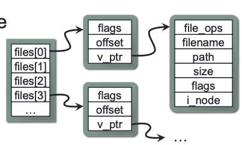
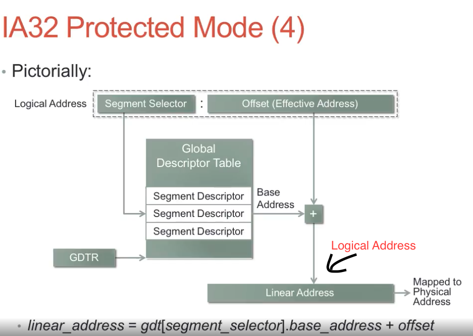
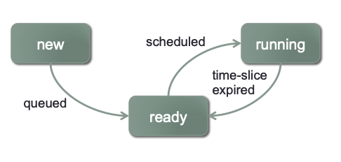

CS-124: Operating Class from CalTech¶
Protection and Security¶
- Feature 1: multiple processor operating modes -- kernel mode (part of OS running) + user mode
- Feature 2: virtual memory
- The processor maps virual address with physical address using a page table
- The memory management unit (MMU) performs this translation
- Translation Lookaside Buffer (TLB) cache page table entries to avoid memory access overhead when translating address.
- Only the kernel can manipulate the MMU's configuration. -- if user-mode code tries to access kernel space, processor notifies OS.
- Virual memory allows OS to give each process its own isolated address space.
Console and FileIO¶
- read and write for standard input:
basic_istream& read( char_type* s, std::streamsize count );: readcountsize of input froms.basic_ostream& write( const char_type* s, std::streamsize count );: writecountsize of data inputs.- EOF indicates by 0 return-value, error indicated by values < 0.
- Both
readandwriteare syscalls, which takes a long time (milliseconds or microseconds because of context switches to another proces until I/O subsystem fires an interrupt to signal completion). filedes: file descriptor (ID represents a specific file or device). If there are multiple files open, all thefiledeswill be stored in an array (as pointers pointing to file object). Each file consists of current read/write offset within the file. 
UNIX command shell Operation¶
- Wait for a command to be entered on the shell's stdin
- Tokenize the command into an array of
tokens - If
token[0]is an internal shell command, then handle the internal command and go back to 1. - Otherwise,
fork()off a child process to execute the program.wait()for the child process to terminate, then go back to 1.
child process
1. If the parsed command specifies any redirection, modify stdin/stdout/stderr based on the command, and remove these tokens from the tokenized command
2. execve() the program specified in tokens[0], passing tokens as the program’s arguments
3. If we got here, execution failed (e.g. file not found)! Report error.
IA32 Architecture¶
- supports several different memory addressing mechanisms
- IA32 has a segmented memory model: mapping from logical to linear address
- linear_address = gdt[segment_selector].base_address + offset 
Hard Disk Addressing¶
- Disk Sector Addressing
- Cylinder-Head-Sector (CHS) hard disk addressing:
- BIOS generally allows disks to have up to 1024 cylinders, 255 heads, and 63 sectors/track
- Sector is historically 512 bytes: 1024 \times 255 \times 63 \times 512=7.8 GB
Process Lifecycle¶
New¶
- Created by the OS when startup (init)
- Created when a user invokes a program via command line or GUI
- Created when a process spawns another process
Ready and Running¶
- Only one process may be running on each CPU at a time
- When a process is in "running" state , it holds the CPU
- Other processes that could run, but don't currently have the CPU, are in the "ready" state
Interaction between Ready and Running¶
- New processes don't necessarily get the CPU right away: initially go into ready state
- The OS only allows the currently running prcess to hold the CPU for a specific amount of time
- When time-slice exprires, running prcess is preemped and the OS chooses another process to get the CPU
- 
Blocked¶
- Processes often perform long-running tasks
- e.g. read from hard disk, network, or some other external device
- e.g. process waits for another process (e.g. a signal or termination)
-
The process becomes blocked until the resource is available
-
Instead of holding everyone up, kernel removes process from CPU, and chooses another ready process to run

- When the long-running task is completed, the blocked process can resume execution
- proces is moved back into the ready state
- will eventually be chosen by the OS to run on the CPU again

Terminated¶
- Processes eventually terminate
- Serveral tasks must be completed at process termination\
- Any "at-exit" operations must be performed
- Reclaim resources the process is still holding
- Other processes may need to observe terminating process' status
- Processes can terminate for serveral reasons:
- Voluntary terminate by the process itself (e.g. called
exit()or returns frommain(), either with success or error status - Involuntary termination due to an unrecoverable fault in the process (e.g. segmentation fault due to dereferencing a
NULLpointer). - Involuntary termination due to a signal from another proces (e.g. another process issuess a
SIGINT(^C),SIGTERMorSIGKILL) 
(Additional State: ready_suspended and block_suspended)¶
- Ability to suspend/resume processes
- A suspended process will not be scheduled until it is resumed
- A user can suspend a process with e.g. Ctrl-Z at command shell
-
A process can send
SIGDTOPto another process to suspend it -
The process being suspended might also have been blocked on a long-running operation
- Introduce another state to manage such processes

Process Control Block (PCB)¶

- Kernel manages a mapping of Process ID to Process Control Blocks
- Linux uses a hashtable, with bins containing linked-lists of PCBs
Process Status Information¶
- Process control block also includes scheduling details
- Running: Process is currently running on a CPU
- Ready: Process is ready to run, but waiting for a CPU
- Blocked: Process cannot proceed until receives a recoure or a message
- Status data can be used for:
- Specifying pending reource-request for this process
- Specifying other processes in the same state and priority
Process Context-Switch¶
-
When the OS switches from running a given process, the process' context must be saved into the process' PCB
-
CPU state: registers, program counter, stack pointer, status flags
-
Similarly, when the OS switches to another process, the new process' context must be restored from the PCB
-
Context-swtches require a certain amount of time:
-
Entering into the kernel:
- CPU handles the interrrupt (save prog ctr/stack, stack-switch)
- Handler saves CPU state of current process into the process' PCB
-
Kernel often has to invoke the scheduler in order to choose what process to execute next
- Some syscalls don't cause a context-switch, but most tend to
-
Leaving the kernel:
-
kernel must restore CPU state from new process' PCB
-
Kernel must also switch to new process' memory state
-
Each process has its own page-table hierarchyt in its own PCB
-
Must switch the virtual memory system to using the new process' memory mapping
-
When kernel changes the memory mapping, it must also clear the MMU's Translation Lookaside Buffers (basically clear the cache)
-
During a context-switch, the OS isn't doing useful work
-
By "useful work", we maen "running the user's application"
-
Want to minimize amount of time a context-switch takes
- e.g. make the scheduler fast, save/load CPU state fast, etc.
- Also want to minimize the frequency of context-swtiches
- If our system performs many context-switches, it will be spending less time doing useful work
Ready and Blocked Processes¶
- The OS must manage multiple collections of processes (implemented as queue)
- Processes frequently block on long-running operations
- e.g. read data from a file on disk/CD-ROM/flash drive/etc.
- e.g. read data from a network socket
- e.g. wait for another process to terminate
- Need to remove such processes from the ready queue and put them into a collectioon of blocked processes
- Blocked processes usually become unblocked in interrupt handlers

Processes and Threads¶
- Processes have one sequential thread of execution

Why Multithreaded Processes?¶
- Performance (lot of ways that multithreading can improve performance)
- A cleaner abstraction for concurrent operations
Race Condition¶
A race condition is a scenario where:
- Two or more control paths [threads, processes, etc.] manipulate the same shared state
- The outcome is dependent on the order that the interactions take place (i.e. who winsthe race)
- Manifestation of race conditions is dependent on timing
- They don't always happend and very hard to fix
Critical Sections¶
- Race conditions can be avoided by preventing multiple control paths from acccessing shared state concurrently
- Threads, processes, etc.
- A critical section is a piece of code that must not be executed concurretly by multiple control paths
- Mutual exclusion: carefully control entry into the critical section to allow only one thread of execution at a time
- Many different tools to enforce mutual exculusion in critical secions (semaphores, mutexes, read-write locks, etc.)
- Generally, these locks block threads (passive waiting) until they can entre the critical section
- OS kernels frequently requrie additional tools that are compatible with use in interrupt context (i.e. nonblocking)
two process P_0 and P_1 repeatedly entering a critical section
while (true) {
flag[i]=true; // i=0 for P_0, i=1 for P_1;j=1-i
turn=j; // state intention to enter critical section
while(flag[j]&&turn==j); // wait to enter critical section
//... critical section
flag[i]=false;
//... non-critical section
}
- a process P_i can only exit the while-loop if one of these is true:
- flag[j]==false (P_j is outside te critical section)
- turn=i (it's P_i's turn to enter the critical section)
Locks and Deadlocks¶
- Locking mechanisms for synchronization introduce the possibility of multiple prcesses entering into deadlock
- A set of prcesses is deadlockde if each process in the set is waiting for an event that only another process in the set can cause.
- Requirements for deadlock (satisfy anyone):
- Mutual exclusion: resources must be held in non-shareable mode
- Hold and wait: a process must be holding one resource, and waiting to acquire another resource that is currently unavailable
- No preemption: a resource cannot be preempted; the process must voluntarily release the resource
-
Circular wait: the set of process {P_1, P_2,…, P_n} can be ordered such that P_1 is wating for a resource held by P_2, P_2 is waiting for a resource held by P_3, …, P_{n-1} is waiting for a resource held by P_n and P_n is waiting for a resource held by P_1
-
Solution for deadlock:
- Breaking "no preemption" or the "circular wait" requirement of deadlock
- No preemption: if a process cannot acquire a resource, it cannot lock the resource (not practical)
- Circular wait: impose a total ordering over all lockable resources that all processes must follow
- As long as resources are only locked in the total ordering, deadlock can never occur
- If a process acquires a later resource in the ordering, must release all its locks and start over
- Usually not imposed by the OS; must be imposed by the programmer
Deadlock Avoidane¶
The system selectively fail resource requests in order to prevent deadlocks, system detects when allowing a request to block would cause a deadlock and reports an immediate failure on the request. Algorithm to use to detect deadlock: Banker's Algorithm.
Total system resources are:
A B C D
6 5 7 6
Available system resources are:
A B C D
3 1 1 2
Processes (currently allocated resources):
A B C D
P1 1 2 2 1
P2 1 0 3 3
P3 1 2 1 0
Processes (maximum resources):
A B C D
P1 3 3 2 2
P2 1 2 3 4
P3 1 3 5 0
Need = maximum resources - currently allocated resources
Processes (possibly needed resources):
A B C D
P1 2 1 0 1
P2 0 2 0 1
P3 0 1 4 0
Resolve Deadlock¶
-
Semaphores are common synchronization mechanism
-
Allows two or more processes to coordinate their actions
-
Cannot use Semaphores in interrupt context
-
Two operations:
wait()andsignal()—> these to operations have to be enclosed in critical sections. -
Implementation of
wait():while sem.value==0: add this thread to sem.waiting list passively block the thread sem.value-- -
Implementation of
signal():sem.value++ if sem.waiting list is not empty: t=remove a thread from sem.waiting unblock t -
sem.value: how many timeswait()can be called without blocking- Use it to represent how much of a given resource is available
-
Doesn't ensure mutual exclusion